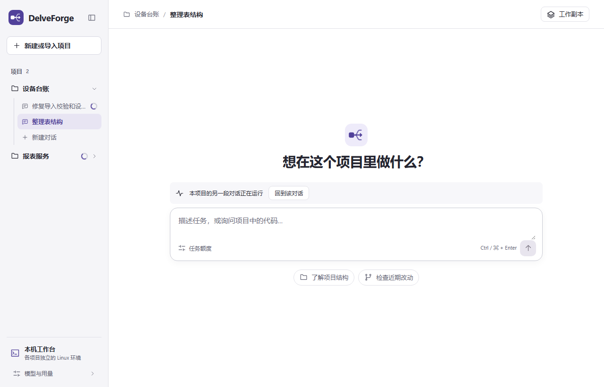
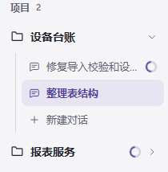

让 Agent 在项目副本里改代码
DelveForge 是 Windows 上的本地 Coding Agent 工作台。导入仓库后，Agent 在工作副本里读代码、改文件、跑测试；你可以随时补充要求，也能回来查看改动和日志。

从导入仓库到查看改动
不用把代码来回复制进聊天框。导入项目后，和 Agent 在同一份工作副本上继续任务。
查看项目列表实拍

选项目
导入本地仓库或创建项目，日常修改不会直接覆盖原目录。
下达任务
告诉 Agent 要做什么。它在项目的 Linux 环境里执行工具，你也能追加要求或停止运行。
检查结果
在工作台查看改动、新增文件和测试日志；也可以从 Windows 编辑器打开工作副本。
实测：会议室预约改签
在独立的 Java 预约项目里，Agent 一轮补了可用时间窗口查询和原子改签。之后在单独的环境重跑测试，并通过 HTTP 核对查询、冲突和并发行为。
Room Desk 验证记录2026 年 11 月 16 日
- Agent 执行
- 1 轮
- Maven 测试
- 原有 8 项 + 新增 24 项通过
- 独立 HTTP 验证
- 8 项通过
导入自己的项目试试
从 Windows 本地安装指南开始，准备运行环境，再导入仓库。